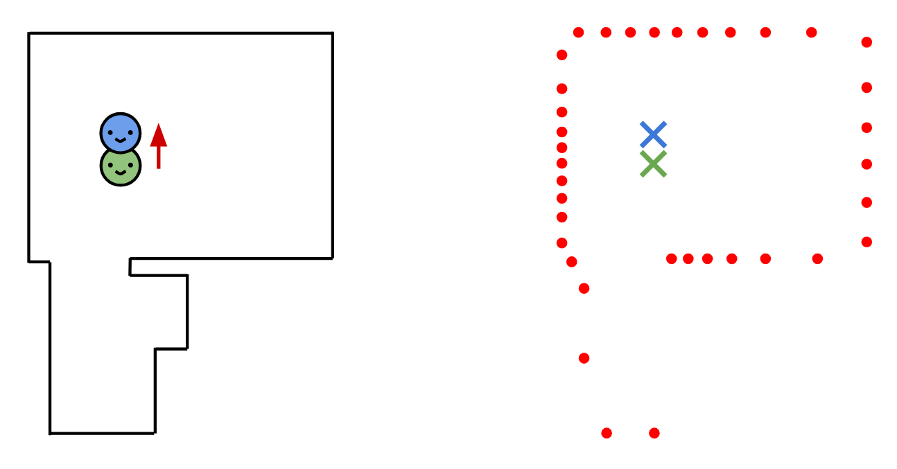
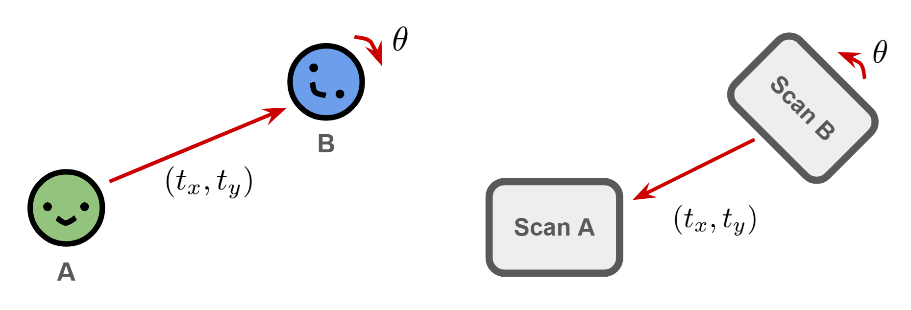
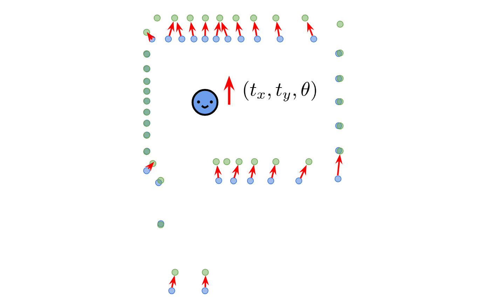
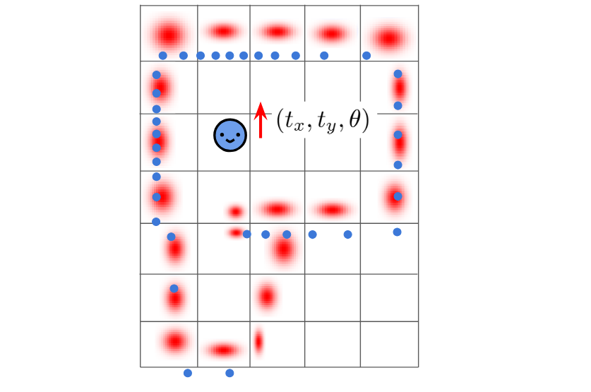

Whenever our robot updates its pose, it takes wheel odometry data to infer how far the robot moved and where, and combines it with the most recent pose to estimate a new pose. This newly estimated pose is then added to the pose graph, and used for the next update.

However, wheel odometry inaccuracies lead to incorrect pose estimation. This can be mitigated by also using LiDAR data. The robot additionally saves LiDAR scans for each pose, and compares subsequent scans to verify/update its original pose estimation. This process is called point cloud registration, and is also used in loop closure to compare two non-subsequent poses and check whether the robot is in a familiar location.
Mathematically, the following two questions are equivalent:
Point cloud registration, also called scan-matching, aims to answer the second question. (Note: the comparison direction between A/B is flipped because as the robot moves forward, the scans move backward, and etc.) We explored two algorithms, ICP and NDT, and ultimately used ICP for our SLAM implementation. We provide a high level overview of both below.

We call the scan we want to map (B) the "source", and the scan we want to match (A) as the "destination". ICP iteratively shifts the source to the destination by iterating through each source point and finding its nearest destination point. It then uses homogenous coordinates and SVD computation to deconstruct the covariance matrix of both points and derive the transformation that minimizes these points.

This transformation is not perfect, since some points select neighbors that should actually be further away. However, we still move our source closer to the destination. We thus repeat this process, selecting new neighbors, until the source converges to the destination. The final transformation matrix is our desired robot pose transformation.
In practice, ICP is not robust, and often requires similar scans to correctly find the optimum transformation. (This is why our robot updates its pose every 5cm.) When ICP works, it is very accurate, though convergence is slow.
NDT is also an iterative algorithm, designed to give coarse but fast estimates. The local map is first divided into cells (roughly 50cm by 50cm), and the destination scan is turned into a series of 2D normal distributions. We then run Newton's method of unconstrained optimization to find the direction of transformation that maximizes the source points' overlap with the normal distribution.
